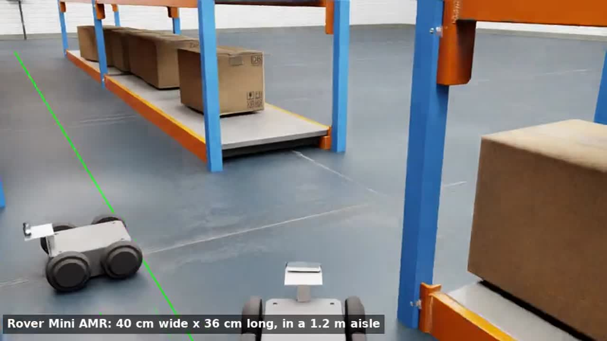

Digital twin · Navigation
AMR navigation through 18-inch aisles
An Isaac Sim twin of a 0.40 m skid-steer robot that drives itself through 45.7 cm warehouse aisles. It uses only its own simulated sensors; ground truth is used only to score each run.
- 3 of 3 missions with no contact, 0.9–1.9 cm max off-centre
- RealSense D455 stereo + IMU, wheel odometry, EKF fusion
- Arm pick-and-place and VLM aisle-check demos
- Isaac Sim 5.1
- cuVSLAM
- nvblox
- ROS 2 Nav2